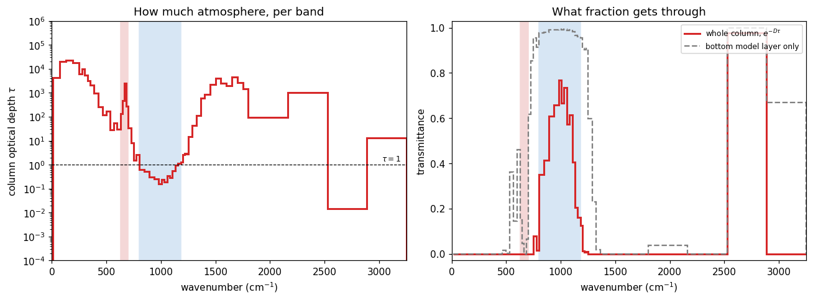

The window, measured
Chapter 7 writes the optical depth increment as dτ = κ_λ ρ dz / cos θ and then says the quiet part out loud: κ carries a subscript λ. Absorption is a property of wavelength, so optical depth is too.
The Jan 29 lecture asked the question this page answers directly: what would the window be if you had a pure nitrogen atmosphere? Here we turn the absorbers down and look.
Page 1 found the atmospheric window by pointing at it — a stretch of the outgoing spectrum near 10 µm where the brightness temperature climbs to within a few degrees of the ground. That was a description of a symptom. The window is not a feature of the outgoing radiation; it is a feature of the gas, and radiation merely reports it.
So this page measures the cause. Optical depth per band is a number the radiation code computes on its way to everything else, and climt hands it to you: longwave_optical_depth_per_band. Column optical depth tells you, band by band, how much atmosphere there is at that wavelength. The window is then not an assumption you make but a range you read off — the wavenumbers where that number is less than one.
The same column as page 1
Nothing above has changed from page 1 except that CO₂ is now set explicitly rather than left at climt’s default — we are about to turn it, so it should start somewhere we chose.
How much atmosphere is there, at each wavelength?
Optical depth is dimensionless and additive: sum a column of layers and you get the column optical depth τ. What we plot below is that sum, per band, together with the fraction of the surface’s emission that gets through it.
That fraction is not exp(−τ). Radiation leaves the surface in every upward direction, and a photon heading off at an angle travels further through the same slab — the 1 / cos θ in chapter 7’s dτ. A two-stream model does not integrate over angle; it replaces the whole integral with one representative slant path, a diffusivity factor D, and writes the transmittance as exp(−D τ). Cork uses the Elsasser value D = 1.66. (Your notes derive chapter 8 with D = 2 instead; page 4 is where that difference starts to matter, and climt lets you set it.)

This is the figure the cell above produces. Live cells need WebAssembly; if your browser blocks it, the static version is here.
Reading it
The left panel needs a log axis, which is the entire point. In the water vapour rotational band below 250 cm⁻¹ the column optical depth runs from 4 × 10³ to 2 × 10⁴. At the clearest point of the window, 980–1005 cm⁻¹, it is 0.16 — five orders of magnitude apart. These are the same atmosphere, the same column of air, seen at two wavelengths; and calling both of them “the atmosphere’s emissivity” is the compression page 1 complained about.
Eleven adjacent bands come in under τ = 1, and they are contiguous:
| band | column τ | transmittance |
|---|---|---|
| 800–845 cm⁻¹ | 0.63 | 35% |
| 845–890 cm⁻¹ | 0.53 | 41% |
| 890–935 cm⁻¹ | 0.30 | 61% |
| 935–980 cm⁻¹ | 0.25 | 66% |
| 980–1005 cm⁻¹ | 0.16 | 77% |
| 1005–1030 cm⁻¹ | 0.25 | 66% |
| 1030–1055 cm⁻¹ | 0.19 | 73% |
| 1055–1080 cm⁻¹ | 0.34 | 57% |
| 1080–1105 cm⁻¹ | 0.29 | 61% |
| 1105–1130 cm⁻¹ | 0.54 | 41% |
| 1130–1155 cm⁻¹ | 0.95 | 21% |
So the atmospheric window, measured rather than asserted, is 800–1155 cm⁻¹ — 355 cm⁻¹ wide, or 8.7 to 12.5 µm. That is not a definition anyone imposed; it is where the gas ran out — and note that it does not end at a round number, or at a band edge someone chose. The printed list finds one more transparent band, 2525–2888 cm⁻¹, out on the shortwave tail where τ is 0.014. It is transparent and irrelevant in the same breath: page 1 measured the entire region above 1800 cm⁻¹ carrying 3.8 W m⁻² of the 246. A window only counts where there is something to come through it.
And “window” flatters even the real one: at its clearest, 980–1005 cm⁻¹, almost a quarter of the surface’s emission is still absorbed on the way out, and at its 800 cm⁻¹ edge nearly two thirds is. This is why page 1’s window brightness temperature came back at 284 K rather than 288 K, and why the window sagged at its edges rather than sitting flat — the window is a screen door, not an open one.
The gray dashed curve is the model’s own longwave_transmittance_per_band diagnostic, and it sits close to 1 across most of the spectrum — which looks like it contradicts the red curve entirely.
It does not. Read the dims: lw.diagnostic_properties["longwave_transmittance_per_band"]["dims"] says mid_levels, so this is the transmittance of a single model layer, not of the column. On a 40-level grid the bottom layer is a couple of dozen hPa thick and transmits 97–99% in the window, but in the rotational band it still stops everything (10⁻²⁴⁵ at 130–190 cm⁻¹). Its value depends on how many levels you asked for; the red curve does not.
The habit worth taking away: before using a diagnostic, check what axis it lives on. Almost every wrong-by-a-factor bug in this business is a dims mistake.
Now turn the absorbers down
Here is the lecture’s question, made executable. Two knobs: the CO₂ mole fraction in ppm, and a multiplier on the specific humidity from the sounding. Set both near zero and what is left is essentially a nitrogen atmosphere — a transparent gas that neither absorbs nor emits in the infrared.
The answer to the lecture’s question
Set CO2_PPM = 10 and HUMIDITY_SCALE = 0.001 and re-run. The window does not so much widen as burst: 2055 cm⁻¹ of open spectrum against Earth’s 718, and the OLR rises from 247 to 354 W m⁻² — 91% of what the bare surface emits. The greenhouse effect has fallen from 144 W m⁻² to 36.
At this resolution you can see what “burst” means in detail. The transparent region is no longer one block: it is four stretches — 388–630, 725–1450, 1800–2162 and 2525–3250 cm⁻¹ — separated by what is left of the absorbers. Those gaps are the survivors, and they name themselves: 630–725 cm⁻¹ is the CO₂ 15 µm core, still opaque at 10 ppm, and 1450–1800 cm⁻¹ is what remains of the water vapour ν₂ bending band at a thousandth of Earth’s humidity. Everything else has gone.
That is the shape of the answer: a pure nitrogen atmosphere has no window, because a window is a hole in something, and there would be nothing left to have a hole in. The whole spectrum is the window. The surface radiates to space directly and the ground sits at its bare-rock temperature.
Two details in that run are worth more than the headline.
The 15 µm bite survives. Look at the OLR panel at 630–700 cm⁻¹: even at 10 ppm and a thousandth of the humidity, the four bands of the CO₂ core still have column optical depths of 3.9, 17, 89 and 9.2 — every one of them opaque, and together still carving a notch out of the spectrum. Carbon dioxide is a ferociously effective absorber where it absorbs at all — which is exactly the property that makes it a climate control knob, and page 5 puts a number on it.
10 ppm is a floor, not zero. Try CO2_PPM = 1 and nothing changes. The k-table this component reads was built on a grid of CO₂ concentrations running from 10 ppm to 10 000 ppm, and asking for a value below the bottom of that grid gets you the bottom of that grid. The model will not tell you it clipped your input. Every lookup-table model has edges like this, and knowing where yours are is part of using it honestly — lw._table["co2_vmr_grid"] prints them.
Page 1 read diagnostic_properties — what a component produces. input_properties is its mirror: what the component requires before it will run.
Each entry pins three things, and climt enforces all three:
A name. The quantity is mole_fraction_of_carbon_dioxide_in_air, not co2 or CO2 or xco2. These are CF standard names, which is what lets you hand the same state to a different component and have it understood. climt will raise rather than guess: a state missing a required name is an error, and a state with an extra co2 key is ignored.
Units. climt converts for you — put a temperature in degC into a state and a component wanting degK gets degK. That is why the conversions on this page are all explicit and visible: CO2_PPM * 1e-6 because the contract says mole/mole. Note that specific_humidity is the exception in the list above — it is a mass fraction in kg/kg, while every other gas is a mole fraction. That is convention, not consistency, and it will bite you at least once.
Dims. ['mid_levels', '*'] versus ['interface_levels', '*'] versus ['num_longwave_bands', '*']. The * is however many columns you have. Read these before indexing, as the transmittance trap above showed.
Exercises
Physics
Where is CO₂’s leverage? Step
CO2_PPMover 10, 100, 1000, 10 000 with humidity at 1.0, and print the column optical depth in the 15 µm core (630–700) and in the window (800–1180) each time. The deepest core band, 665–682 cm⁻¹, goes from 93 to 88 000 — a factor of 950 — while the window’s mean τ moves about 10% over the first hundredfold increase and only doubles across the whole range. Why does adding CO₂ do so little to the window, and what does that imply about where the next doubling will act?Then look harder at the core’s numbers. Above the 10 ppm floor they are very nearly proportional to concentration: ten times the CO₂, ten times the optical depth. Hold onto that, because the forcing from doubling CO₂ is famously logarithmic — roughly the same few W m⁻² for every doubling, all the way up. A quantity that grows a thousand-fold is driving one that grows by a fixed step. Those two facts have to be reconciled, and page 5 reconciles them; the machinery you need is on page 3.
Which absorber owns the window? With
CO2_PPM = 280, lowerHUMIDITY_SCALEalone and watch the eleven window bands’ τ. Water vapour is supposed to be weak here — so why does the window’s optical depth respond to humidity at all? (Search for “water vapour continuum”.)The core is already shut. Exercise 1 shows the 15 µm core opaque at every CO₂ the table can represent, τ > 20 even at 10 ppm. If the band is already completely opaque, how can adding more CO₂ change the OLR at all? Page 1’s brightness temperatures are the clue; page 3 is the answer.
Code
Write a loop over three CO₂ values that prints a table of column optical depth per band — one row per band, one column per CO₂ value — using
limitsto label the rows. Note that you must re-calllw(state)after each change: diagnostics are computed at call time, not read from a cache.You need to change the ozone concentration. Without opening the source or this page, use
lw.input_propertiesto determine whether this component accepts ozone at all, and if so under what name and in what units. Then do the same for methane. What does the answer tell you about whichtablethis component was constructed with?
Going deeper
Column optical depths spanning six orders of magnitude are not something you can compute band by band from a formula; they come from a k-distribution fitted to line-by-line spectra, and the bands overlap. Gas overlap covers how cork combines two absorbers inside one band without solving the radiative transfer twice.